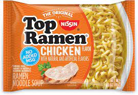

The most authentic Ramen Noodles
So this one has a lot of ingredients so lets begin. You'll need:
- Boil the water, then add in the seasoning mix. The instructions in the package says to add the noodles first. Thats wrong.
- Then add the noodles in and only cook them for like 3 minutes, any longer and you go past that al dente noodle.
- Now plate it and serve it. Enjoy!
Return to main page